Jeeves Server has a clear access model built around two roles: insiders and outsiders. Understanding the difference is key to using sharing effectively.
An insider is an authenticated user on the server. Depending on their configuration, they may have full access or be scoped to specific paths. Within their scope, they can navigate directories, view files, and generate share links for others.
Anyone listed in the insiders map in your config:
{
"alice@example.com": {},
"bob@example.com": { "scopes": ["/d/projects/*"] }
}
Depends on which auth modes are active:
'google' mode) — Insider logs in with Google. The server checks their email against the insiders map. On first login, a key seed is auto-generated and stored in state.json.'keys' mode) — Insider uses a derived URL key (?key=<insider-key>). The key is derived from a configured seed via HMAC-SHA256.Scopes restrict which paths an insider can access. Three formats are supported:
Allow-only (string array — backward compatible):
'contractor@example.com': {
scopes: ['/d/projects/client-x/*'],
},
Allow with deny (broad access with cutouts):
'team-member@example.com': {
scopes: {
allow: ['/d/*'],
deny: ['/d/secrets/*', '/d/.private/*'],
},
},
Deny-only (everything except exclusions):
'almost-full@example.com': {
scopes: {
deny: ['/d/hr/*', '/d/finance/*'],
},
},
Semantics:
allow = implicit ['/**'] (allow everything)deny = no exclusionsAn outsider is someone viewing a specific file or directory via a share link. They can see exactly what was shared — nothing more.
Every insider has a seed — a secret string (either configured manually or auto-generated on Google login). From this seed, the server derives two types of keys:
| Key type | Derivation | Grants |
|---|---|---|
| Insider key | HMAC-SHA256(seed, "insider") |
Full browsing access (within scopes) |
| Outsider key | HMAC-SHA256(seed, normalized_path) |
Access to one specific path |
| Expiring outsider key | HMAC-SHA256(seed, path + "|" + expiry) |
Access to one path, until expiry |
All keys are truncated to 32 hex characters. Verification uses timing-safe comparison.
In the header of any file or directory view, insiders see sharing controls:
The generated URL includes the outsider key as a ?key= parameter and (if expiring) an &exp= parameter with the expiration timestamp.
Example insider link:
https://jeeves.example.com/browse/d/docs/design.md?key=a1b2c3d4...
Example outsider link (expiring):
https://jeeves.example.com/browse/d/docs/design.md?key=e5f6a7b8...&exp=1771340000000
When you share a directory link, the outsider can:
The server checks the outsider key against the requested path and all ancestor paths, so a key generated for /d/docs/ also grants access to /d/docs/report.md and /d/docs/specs/api.md.
The 🔑 button in the header rotates the insider's key seed. This:
Use rotation when you need to revoke all shared links at once (e.g., a contractor's access ended, a link was shared too broadly).
In addition to insider-generated keys, the server supports named machine keys for programmatic access:
"keys": {
primary: 'random-seed-string',
'webhook-notion': { key: 'another-seed', scopes: ['/event'] },
_internal: 'internal-seed',
},
Machine keys follow the same derivation model:
webhook-notion above) can only access matching paths_internal keyReserved for server-side operations. Puppeteer uses this key when rendering PDFs and DOCX files (it loads the page in headless Chrome and needs to authenticate). It must be unscoped — the schema enforces this.
When a request arrives, the server determines access as follows:

The server renders different UI based on access mode:
| Feature | Insider | Outsider |
|---|---|---|
| Drive/directory browsing | ✅ | Only shared path |
| File viewing | ✅ | ✅ |
| PDF/DOCX export | ✅ | ✅ |
| Share link generation | ✅ | ❌ |
| Key rotation | ✅ | ❌ |
| Download dropdown | Full options | File download only |